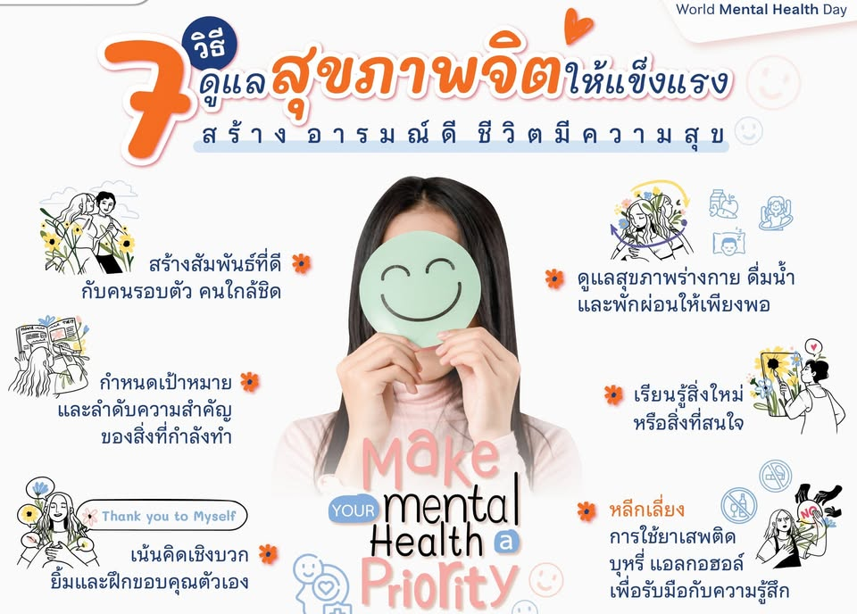

การดูแลสุขภาพจิต

สุขภาพจิตมีความสำคัญไม่แพ้สุขภาพร่างกาย วัยรุ่นอาจพบกับความเครียดจากการเรียน ครอบครัว หรือความสัมพันธ์กับเพื่อน ดังนั้นควรรู้จักผ่อนคลายและจัดการกับความเครียดอย่างเหมาะสม เช่น ฟังเพลง ออกกำลังกาย พูดคุยกับคนที่ไว้ใจ หรือทำกิจกรรมที่ตนเองชอบ หากมีปัญหาหรือความเครียดมากเกินไป ควรขอคำปรึกษาจากผู้ใหญ่หรือผู้เชี่ยวชาญ